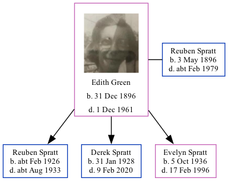

Edith Maud Caroline Spratt (née Green) 1896 - 1961
[ Home ] | [ Calendar ] | [ Surnames Index ] | [ Family History ]Edith Green, the wife of Reuben Spratt (the great-uncle of Nigel Horne), was born in Marylebone, London, England on Dec 31, 18961,2,3 and married Reuben (an agricultural laborer with whom she had 3 children: Reuben A, Derek John and Evelyn Maud) in Thanet, Kent, England around Nov 19245.
Throughout her life, she lived at 2 Alma Place, Margate, Kent on Sep 29, 19391; and on 4 Alma Road, Margate, Kent in 1961.
She died on Dec 1, 1961 in Thanet3,4.
Children
- Reuben A was born c. Feb 1926
- Derek John was born on Jan 31, 1928
- Evelyn Maud was born on Oct 5, 1936
Citations
- 1939 Register - Findmypast (was the wife of the head of the household)
- England & Wales births 1837-2006 - Findmypast
- England & Wales, Death Index: 1984-2005 Online publication - Provo, UT, USA: The Generations Network, Inc., 2007.Original data - General Register Office. England and Wales Civil Registration Indexes. London, England: General Register Office. © Crown copyright. Published by permission of the Cont
- England & Wales Government Probate Death Index 1960-2019 - Findmypast
- England & Wales, Marriage Index: 1916-2005 Online publication - Provo, UT, USA: The Generations Network, Inc., 2009.Original data - General Register Office. England and Wales Civil Registration Indexes. London, England: General Register Office. © Crown copyright. Published by permission of the Cont
Media
Edith M C Green - probate
Edith Green
England & Wales deaths 1837-2007 - BMD/D/1961/4/AZ/001042/092
England & Wales marriages 1837-2008 - BMD/M/1924/4/AZ/000452/004
1939 Register Transcription - TNA-R39-1755-1755D-006-38
England & Wales marriages 1837-2008 Transcription - BMD-M-1924-4-AZ-001097-105
England & Wales births 1837-2006 - BMD/B/1896/1/AZ/000226/158
England & Wales Government Probate Death Index 1960-2019 - GBOR/GOVPROBATE/A/1960-1962/00300817
Family Tree
Generated by Ged2Site. Last updated on Jul 20, 2025